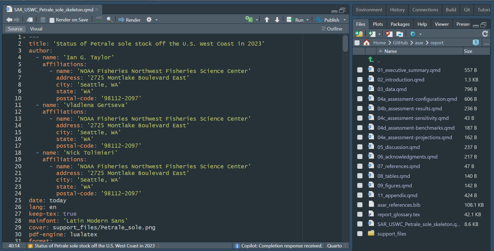
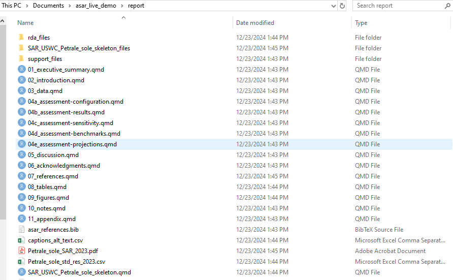

Download using the directions below and fill in create_template.R function with the desired parameters (follow example below) to create a template Quarto document to be rendered to create a stock assessment report.
The goal of asar is to automate stock assessment reports for NOAA science centers so they are reproducible and cohesive across the agency. This project intends to create a streamlined workflow that allows the analyst to create a customized report tailored to their needs and requirements by the SSC, council, or other regional management organizations.
For users interested in testing, please see Testing section below. In its current form, this package builds a template to create a stock assessment report including NOAA Fisheries formatting and included tables and figures.
Installation
First please check to make sure tinytex package is installed on your machine. If not, please install using the following lines:
install.packages("pak")
pak::pkg_install("rstudio/tinytex")Then install the package using one of the three following ways:
- Using
pak
install.packages("pak")
pak::pak("nmfs-ost/asar")- Using
remotes
install.packages("remotes")
remotes::install_github("nmfs-ost/asar")- From the noaa-fisheries-integrated-toolbox r-universe:
install.packages('asar', repos = c('https://noaa-fisheries-integrated-toolbox.r-universe.dev', 'https://cloud.r-project.org'))We also recommend to download the stockplotr package. Use one of the previous download instructions to also install stockplotr by replacing ‘asar’ with ‘stockplotr’.
Example
The following code will allow the user to replicate the 2023 petrale sole stock assessment produced by the NWFSC and made available by the Pacific Fisheries Management Council. The assessment model files are also available on the PFMC’s website. A tutorial for using asar can be found here.
The SS3 Report.sso file was converted using the following code:
output <- stockplotr::convert_output(
file = system.file("extdata", "Report.sso", package = "asar"),
model = "ss3",
save_dir = here::here("readme_output.rda"))In this function, the users have the option to convert output files to a standardized framework from either SS3 (Report.sso) or BAM (.rdat) output files. asar uses this converted output from the environment to calculate quantities in the preamble and it is also used for creating plots and tables from stockplotr.
To proceed, the user should then run the following:
asar::create_template(
format = "pdf",
office = "NWFSC",
region = "U.S. West Coast",
species = "Petrale sole",
spp_latin = "Eopsetta jordani",
year = 2023,
authors = c("Ian G. Taylor"="NWFSC", "Vladlena Gertseva"="NWFSC", "Nick Tolimieri"="NWFSC"),
include_affiliation = TRUE,
simple_affiliation = FALSE,
param_names = c("nf","sf"),
param_values = c("North fleet", "South fleet"),
model_results = here::here("readme_output.rda")
)Note: The output of this report is an example based on a real stock assessment. Please refer to the link in the beginning of this section for the full assessment report.
Here, you can find a list of reports created using asar. Please let us know if you’d like us to add your own report to this list!
Testing
We encourage users to test asar throughout its development. Please use the above example to get a basic understanding on how to create a stock assessment template. Currently, asar is only setup to render to a pdf or html. Once the user successfully executes create_template(), all files are created and the user can render the document from the skeleton file:

All associated files will be created in a folder called report within the file_dir argument path (default working directory).

This is a modularized template, there is no need to make any edits to the skeleton file. To write the report, user should navigate and open each supporting section Quarto document labeled:
- Executive Summary
- Introduction
- Data
- Assessment
- Discussion
- Acknowledgments
- References
- Tables
- Figures
- Appendix
Accessibility
Did you know that asar reports contain several accessibility features, many of which are required as per Section 508 compliance standards?
We strongly encourage all users to check out the Increasing Report Accessibility vignette to learn:
- Which accessibility features are 100% built-in, and which features require input from you to complete them
- How to add the features requiring your effort (e.g., alternative text)
- The development status of the features that are required for submission as per two relevant NOAA checklists
Contributions
Have you identified any suggestions for improvement, bugs, or questions? Please see our Contributing page for more information on how to make effective contributions to asar.
Thank you for helping us improve this package!
Progress, Goals, & Timeline
What are we working on? When do we aim to complete it? What have we accomplished? Check out our GitHub Project Board and Milestones to see the package development status and our goals for the next few months.
Tips
If you have additional questions, there is a helpful Q&A guide available in the articles section of our GitHub Page located here.
User Community
This package is intended for use by stock assessment analysts across NOAA Fisheries, but the modularized process and workflow can be used in other applications such as developing other reports for managing organizations or for rendering stock assessment reports in other regions of the world.
Feel free to report any issues with the package to the GitHub Issues Page and any questions regarding the package on the GitHub discussion board. Before you create an issue, please see the status at the beginning of this page to check if the package is operational or still in early stages of development.
Code of Conduct
We as members, contributors, and leaders pledge to make participation in our community a harassment-free experience for everyone, regardless of age, body size, visible or invisible disability, ethnicity, sex characteristics, gender identity and expression, level of experience, education, socio-economic status, nationality, personal appearance, race, caste, color, religion, or sexual identity and orientation. We pledge to act and interact in ways that contribute to an open, welcoming, diverse, inclusive, and healthy community.
All contributors participating and contributing to the asar project are expected to adhere to the Code of Conduct.
Disclaimer
This repository is a scientific product and is not official communication of the National Oceanic and Atmospheric Administration, or the United States Department of Commerce. All NOAA GitHub project code is provided on an ‘as is’ basis and the user assumes responsibility for its use. Any claims against the Department of Commerce or Department of Commerce bureaus stemming from the use of this GitHub project will be governed by all applicable Federal laws. Any reference to specific commercial products, processes, or services by service mark, trademark, manufacturer, or otherwise, does not constitute or imply their endorsement, recommendation, or favoring by the Department of Commerce. The Department of Commerce seal and logo, or the seal and logo of a DOC bureau, shall not be used in any manner to imply endorsement of any commercial product or activity by DOC or the United States Government.